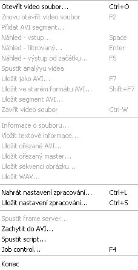

Nabídka Soubor - VirtualDUB
Co k čemu je

- Otevřít video soubor
- otevře soubor, s kterým budete dále pracovat
- Znovu otevřít video soubor
- funguje to jako "Obnovit" v internetovém prohlížeči: znovunahrání videa, pokud jste ho v jiném programu nějak upravili
- Přidat AVI segment...
- přidá k jednomu souboru druhý.
- Náhled - vstup...
- přehraje vstupní video.
- Náhled - filtrovaný...
- přehraje video s filtry, které jste nastavily.
- Náhled - výstup od začátku...
- Přehraje video podle vašeho nastavení.
- Spustit analýyu videa
- nevím
- Uložit jako AVI...
- uložit video
- Uložit ve starém formátu AVI
- uloží video podle normy AVI 1.0
- Uložit segment AVI...
- uloží část videa.
- Zavřít video soubor
- uzavře otevřený soubor, přičemž VirtualDUB nechá spuštěný.
- Informace o souboru
- zobrazí informace o video a audiokodecích.
- Vložit textové informace
- netuším.
- Uložit ořezané AVI, Uložit ořezaný master
- nevím.
- Uložit sekvenci obrázků
- uloží každý sním z videa (normálně jich je 25) do vámi zvoleného formátu.
- Uložit WAV
- uloží zvukovou stopu do souboru WAV.
- Nahrát nastavení zpracování, Uložit nastavení zpracování
- VirtualDUB dokáže uložit nastavní zpracování videa. A dělá se to tady.
- Spustit frame server...
- ve VirtualDUBu otevřete soubor, tímto příkazem ho uložíte a v jiném programu, který neumí otevřít AVI, otevřete tento soubor.
- Zachytit do AVI...
- Virtual DUB umožňuje nahrát video z TV karty, tímto se zapíná speciální nahrávací mód.
- Spustit script...
- pořádně nevím
- Job control...
- fajn věc, takový manažer prací. Umožňuje spouštět procesy, aniž byste museli sedět u počítače.
Asi nemá cenu rozebírat všechno, většině nejspíš rozumíte.
Předchozí: Popis
Další: Nabídka "Upravit"
Video na PC: Vytvořeno v roce 2005 a víc. Autorem je Jan 'Šlaha' Šlahora. Veškerá práva vyhrazena autorům článků. Pokud není uvedeno jinak, jsem to já.